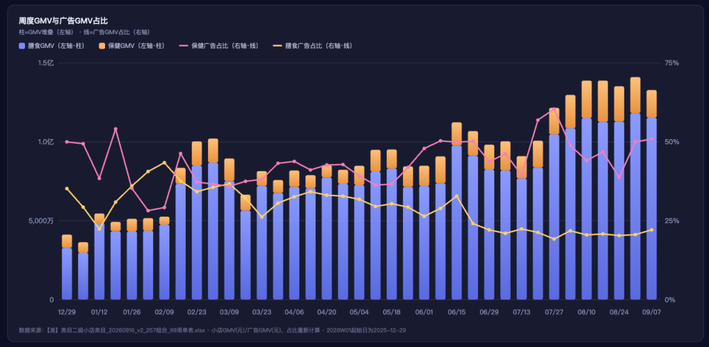
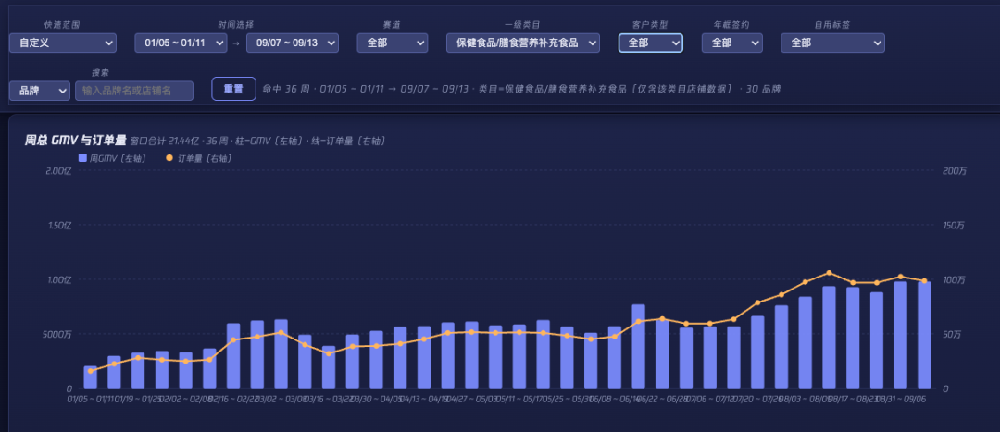
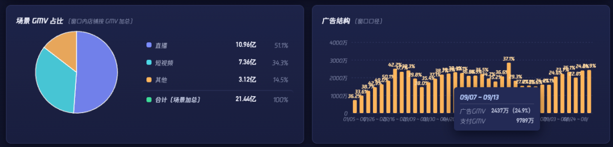
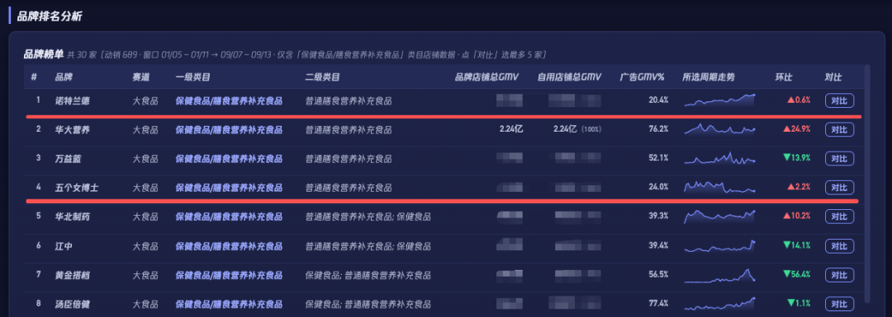
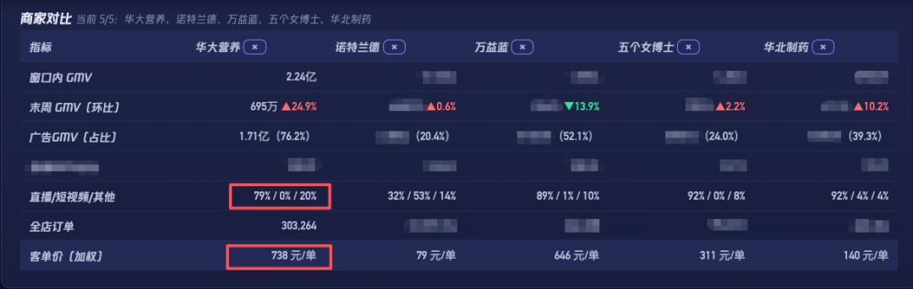

腾讯营销膳食营养团队
给华大一个对标参考系，让"哪强哪弱"有坐标





菌/菇/酵素（含益生菌）以 26.6% 稳居第一
Q3 益生菌类目消耗环比 -20.6%；玩家在涌入，华大份额被稀释
店播是绝对主力；达播已占总 GMV 的 14.7%，但退款率是店播的近 2 倍
| 链路 | GMV | GSV（退后） | GMV 占比 | GSV 占比 | 退款率 |
|---|---|---|---|---|---|
| 店播（直播） | 5,841.18万 | 4,860.78万 | 75.8% | 77.2% | 16.8% |
| 达播 | 1,129.58万 | 787.54万 | 14.7% | 12.5% | 30.3% |
| 直购 | 739.07万 | 646.69万 | 9.6% | 10.3% | 12.5% |
| 合计 | 7,709.84万 | 6,295.00万 | 100% | 100% | 18.4% |
Q2 未启动达人合作；GSV 为退后口径
| 链路 | Q2 GSV | Q3 GSV | 变化 |
|---|---|---|---|
| 直播店 | 6,412.5万 | 4,860.8万 | -24.2% |
| 直购 | 718.4万 | 646.7万 | -10.0% |
| 达播 | — | 787.5万 | 新增 |
| 合计 GSV | 7,130.9万 | 6,295.0万 | -11.7% |
| 合计 GMV | 8,579.1万 | 7,709.8万 | -10.1% |
| GSV 结构 | 直播店 89.9% 直购 10.1% | 直播店 77.2% 直购 10.3% · 达播 12.5% | 三条腿 |
镜脂、益畅双主力占近 7 成
肠道益生菌（益畅）ROI 高于其他品类整体约 45%
| 品类 | GMV | 占比 | ROI 变化（vs H1） | 判断 |
|---|---|---|---|---|
| 镜脂 | 1,935.85万 | 34.9% | -7.5% | 消耗担当，量价双降 ⚠️ |
| 益畅 | 1,858.64万 | 33.5% | +46.0% | 缩量75%后精投，ROI亮点 ⭐ |
| 益休（睡眠） | 975.01万 | 17.6% | +5.2% | 心智最强，被低估 ⭐ |
| 直购 | 680.35万 | 12.3% | -8.9% | 小店链路效率需审视 ⚠️ |
| 益力（骨骼） | 92.61万 | 1.7% | Q3 新品 | 开播一周即起量 ⭐ |
Q3 新上线品类，直播链路（华大营养益生菌研究中心）；9/19 开播，数据截至 10/7
9月场均 GMV 冲到 25.3 万，主要靠营养专家张晔单场拉动
按产品功能细分；"出现场次"为该品类在 67 场达播中被带货的场次数
| 品类 | 代表产品 | GMV | 占比 | 场次 |
|---|---|---|---|---|
| 护理肠道 | 益畅、畅青、蔬畅 | 399.4万 | 35.4% | 60 |
| 护理胃 | 益舒 | 192.4万 | 17.0% | 54 |
| 减脂 | 镜脂·轻、代餐奶昔 | 184.2万 | 16.3% | 27 |
| 改善睡眠 | 益休 | 120.3万 | 10.7% | 40 |
| 益生元 | 晚安饮、早安饮 | 81.3万 | 7.2% | 19 |
| 其他 6 类 | 护肝 / 维生素 / 口腔 / 私护 / 免疫 / 降酸 | 152.2万 | 13.5% | — |
本次核心 · 先用如翼数据把"R3 缺口从哪来"讲透（A），再给出"三层补 R3"打法（B），目标：种草率 3.82% → 行业均值 6.83%
R3 缺口、流转断档、品牌盘塌陷、跨店失血——四个现象，同一个根因：种草内容与品牌收口投入长期不足
近 30 天（9/6 → 10/6）桑基流转；条形宽度为示意
202609 曝光 UV 1,243万（-13.0%）、花费 1,201.6万（+11.6%）、投放触点 13 个；TGI＞100 代表人群匹配度高于平均
如翼 · 域内传播「品牌传播概览」与「品牌关键词」；两个品牌为同一统计周期，直接对比原始值
| 指标 | 华大营养 | 万益蓝 | 华大为万益蓝的 |
|---|---|---|---|
| 曝光触达 · 触达数 | 6,899.1万 | 2.15亿 | 32.2% |
| 曝光触达 · 新发布内容数 | 23 | 140 | 16.4% |
| 种草互动 · 品牌搜索数 | 0 | 3,645 | 0% |
| 种草互动 · 互动数 | 104,969 | 136,432 | 76.9% |
| 效果转化 · 点击数 | 1,210,162 | 1,354,642 | 89.3% |
| 万益蓝 · 关键词内容数 TOP6 | |
|---|---|
| 万益蓝 | 184 |
| 益生菌 | 61 |
| 50+ | 38 |
| 膳食纤维 | 31 |
| 益生菌产品 | 28 |
| 中老年人益生菌 | 23 |
| 华大营养 · 关键词内容数 TOP6 | |
|---|---|
| 华大营养 | 27 |
| 益生菌 | 11 |
| 益畅益生菌 | 6 |
| 营养素 | 5 |
| 99健康节 | 4 |
| 华大益生菌 | 4 |
点击截图可在新窗口查看大图
近 30 天（至 10/5）小店资产流转，3 家店合并为品牌口径
| 店铺 | 种草流出 | 种草流入 | 成交流出 | 成交流入 | 判断 |
|---|---|---|---|---|---|
| 华大营养益生菌-BGINutri | 100,496 | 121,881 | 17,697 | 1,121 | 种草净流入 +2.1万 |
| 华大营养益生菌 | 79,105 | 52,234 | 7,741 | 801 | 双端净流出 |
| 华大营养膳食 | 2,219 | 334 | 212 | 5 | 纯售卖型 |
「保健食品/膳食营养补充食品」大类目，2026-10-05 小店资产分布
依据：视频号效果竞价种草占比 51.7%、TGI 200，是华大效率最高的种草触点；腾讯新闻 TGI 167 可同步测试。
动作：素材从纯卖货转向科普口播 / 场景内容；切一部分预算专做种草测试，考核关注、长播完、回搜而非只看 ROI。
依据：观看 9 月 158.8 万（+117%）拉动 R3 回升，路径已验证；但组件点击率 2.49% → 0.76% 逐月下滑、种草 TGI 仅 28。
动作：用华大 R3 人群反推达人、换内容策略；考核从播放量 → 点击率 / 回搜率 / 进店率；搭配二次推广加热。
依据：Q3 达播 67 场、GMV 1,129.6 万 / GSV 787.5 万；营养专家张晔 2 场 GSV 209.8 万（占达播 26.6%），场均 GMV 169 万，是达播整体场均（16.9 万）的 10 倍。但其退款率 37.9%，高于达播平均 30.3%。
动作：预算向专家/科普人设集中，拉高场均产出；同步把退款率纳入达人考核，优化大场承接与售后。
依据：当前触点树中品牌竞价/合约占比 <0.1%，品牌心智厚度完全空白。
动作：预热期打一波，配种草素材，不常态化。
动作：如翼导出 R2 人群包，用科普 / 专家内容定向追投——人已经认识华大，差的只是一次深度内容，比继续拉新便宜。
依据：被抢先种草 21.5 万人 + 成交净流出 2.4 万；华大抢先成交占比 45.93% ＞ 竞品 43.59%，反抢有胜算。
动作："被抢先种草人群包 + 流失成交人群包"定向，投益休（睡眠）/ 镜脂轻（体重）差异化内容，错位竞争、不在肠道益生菌主战场打消耗战。
依据：品牌词搜索识别 = 0（行业第 76）；Q3 搜一搜消耗 55 万（+328%），但 ROI 偏低、计价率偏高。
动作：卡"益生菌怎么选""睡眠益生菌"等类目/场景词（词云已出现需求）。按收口/回搜考核，不按 ROI，否则会被一刀砍掉。
依据：自然内容种草占比 0.05%；新发布内容 23 条 vs 竞品 612 条；公众号是 Q3 ROI 最高的版位，但消耗仅占 10.8%。
动作：尹烨（20-40万粉）做脑肠轴科普承接益休睡眠心智；推动 wid 授权验证内容 ROI；公众号版位扩量兼承接种草。
| 优先级 | 抓手 | 新增预算 | 双十一能否吃到 |
|---|---|---|---|
| 立即执行 | ① 视频号竞价种草化 / ③ 达播收口专家 / ⑤ R2 定向 / ⑥ 反抢人群包 | 基本不需要 | ✅ 来得及 |
| 需要拍板 | ② 互选提效 / ⑦ 搜一搜收口 / ④ 品牌竞价 | 需要 | ⚠️ 10 月中前定才来得及 |
| 长期讲 | ⑧ 尹烨 IP / 公众号阵地 / 代言人 | 需要 | 📈 双十一后的资产 |
竞价种草化 · 互选提效 · 专家达播 · 品牌竞价
把已花的钱从"买量"变成"种草"
436 万 R2 定向 · 21.5 万反抢
先挖已拉进来的人，比拉新便宜
搜一搜品专 · 尹烨 IP · 公众号阵地
让种草的人搜得到、留得住
先用大盘人群洞察回答"种给谁、谁来种、在哪种、种什么"，再落成可执行动作 + 资源确认；核心节奏：先种草 2-3 周，再开收割
BRAND_R3 · 大类目口径；TA 占比 = 品牌共鸣人群占类目共鸣大盘比例
口径提示：此处为大类目口径（TGI 31.6/16.08）；A5 中 TGI 147.7/45.6 为益生菌子类目口径，两者不可直接混比，对外建议统一用大类目口径。
STAR_PREFER · 大类目大盘，按成交 TGI 排序；TGI＞1 为偏好高于平均
注：大盘媒体位 TGI（视频号 2.4、腾讯新闻 2.73、小程序 2.01、搜一搜 1.94、公众号 1.74）与店铺 R3 画像 TGI 为不同量纲，未合并作图。
| 决策 | 建议 | 落到哪一层 |
|---|---|---|
| 谁来种 | 达人/明星按"国民度 × 健康/知识人设"选：孙俪型、养生专家、三甲医生/营养师科普型；放弃年轻流量向。与达播"营养专家张晔场均产出为平均 10 倍"的结论互相印证 | 付费种草层 ②③ |
| 种给谁 | 以「大类目品牌共鸣人群（BRAND_R3）」作为双十一种草定向基准，叠加 R2 人群包 + 流失种草人群包做反抢 | 人群层 ⑤⑥ |
| 在哪种 | 视频号为主场（TGI 257），公众号（228）+ 搜一搜（225）做承接与收口 | 付费种草层 ① · 收口层 ⑦⑧ |
| 种什么 | 内容主线 = "科研级益生菌 / 精准营养 × 健康科普"；场景落到睡眠（益休）/ 体重（镜脂轻），尹烨 IP 是天然载体 | 全层通用 |
报名路径：微信小店后台 → 营销中心 → 平台活动 → 11.11 跨店满减补贴（原金秋大促满减补贴升级）
电脑端报名：store.weixin.qq.com/shop/marketingkol/activity/home
报名须知：金秋大促期间保持【续报双十一】开关开启的商家，报名金秋大促的商品若满足 11.11 报名条件将自动续报，无需重新提报；不满足 11.11 条件的商品将陆续清退报名。
活动说明：报名【11.11 直播大场及跃迁激励】活动的商家/带货者，可获电商成长卡激励 + 主播专属券双重权益。
商家报名：微信小店后台 → 营销中心 → 平台活动 → 11.11 直播大场及跃迁激励
store.weixin.qq.com/shop/marketingkol/activity/detail?id=1364&curTab=2
带货者报名：微信小店带货助手 → 营销 → 平台活动 → 11.11 直播大场及跃迁激励
store.weixin.qq.com/talent/shop/marketingkol/activity/detail?id=1364&curTab=2